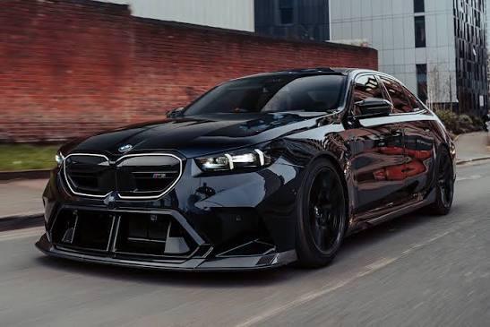
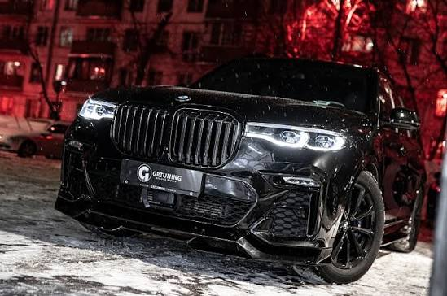
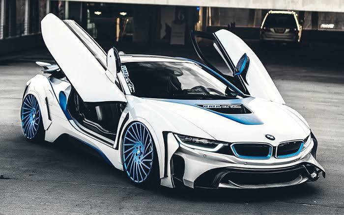

4 days ago
Texnik mukammallik: Har bir detalida sport xarakteri va quvvat sezilib turadigan bu afsonaviy sedan nafaqat o'zining tajovuzkor tashqi ko'rinishi, balki kapot ostidagi yashirin cheksiz quvvati bilan ham hayratga soladi.
Dinamika va boshqaruv: O'ta keskin burilishlarda va yuqori tezlikda ham mutlaq barqarorlikni ta'minlovchi xDrive va innovatsion adaptiv osma tizimi haydovchiga hayajonli poyga zavqini bag'ishlaydi.
Salon qulayligi: Premium sifatli charm materiallar, ilg'or va zamonaviy multimedia imkoniyatlari hamda maxsus ergonomik sport o'rindiqlari uzoq safarlarni charchovsiz, yuqori komfortda o'tkazish imkonini beradi.
Innovatsiya va xavfsizlik: Aqlli yordamchi tizimlar va eng so'nggi tormoz texnologiyalari har qanday yo'l sharoitida to'liq nazorat va xavfsizlikni kafolatlaydi. Yo'llarning chinakam hukmdori bilan har bir kilometr unutilmas hissiyotlarga boy bo'ladi.

1 week ago
Prezidentona salobat: Yo'ldagi barchaning e'tiborini bir qarashda tortuvchi ulkan, muhtasham dizayn va purviqor radiator panjarasi uning yuqori mavqeyi hamda mag'rur xarakterini yaqqol ko'rsatib turadi.
Birinchi klass qulayligi: Uch qatorli keng va shinam salon, afsonaviy panoramali oyna-tom va har bir yo'lovchi uchun alohida ko'p zonali iqlim nazorati bu avtomobilni haqiqiy harakatlanuvchi premium qasrga aylantiradi.
Quvvat va xavfsizlik: Istalgan ob-havo va yo'lsizlik sharoitida ham o'zini ishonchli tutuvchi kuchli TwinPower Turbo dvigateli va eng zamonaviy xavfsizlik tizimlari oilaviy sayohatlarni to'liq xavfsiz qiladi.
Silliq va sokin harakat: Pnevmatik osma tizimi yo me'yordagi yo'l nosozliklarini bilintirmaydi, salonning mukammal shovqin izolyatsiyasi esa har bir safardan rohatlanishni ta'minlaydi.

3 week ago
Futuristik dizayn: G‘ayrioddiy kapalak qanotlari kabi ochiladigan eshiklari va mukammal aerodinamik korpusi kelajakdan tashrif buyurgan durdona sportkar taassurotini uyg'otadi.
Gibrid innovatsiya: Yuqori samaradorlikka ega elektr dvigateli hamda an'anaviy benzindagi quvvat manbaining uyg'unligi atrof-muhitga zarar yetkazmagan holda soniyalarda yuqori tezlikka erishish imkonini beradi.
Unikal hissiyotlar: Cockpit ichidagi zamonaviy raqamli boshqaruv paneli va eng yengil uglerodli (karbon) karkas haydovchiga o'zini professional poygachi sifatida his qilish uchun barcha sharoitni yaratadi.
Ekologik va aqlli: Energiya tejamkor qayta tiklanuvchi texnologiyalar va dinamik rejimlar orqali kelajak avtomobilini bugundanoq boshqarish zavqini beradi.